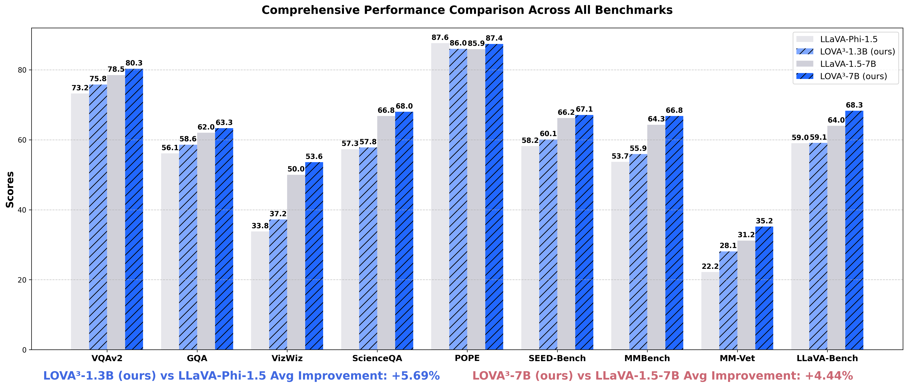

Henry Hengyuan Zhao
Hi üëã, I'm Henry, a PhD student in the
Show Lab
at the National University of Singapore, advised by
Prof. Mike Zheng Shou.
I train Large Multimodal Models (LMMs) and develop agents/benchmarks for
GUI automation and chart-to-code.
Selected work: agent–computer interaction
(WorldGUI),
large multimodal model training
(Genixer,
LOVA3),
and interactive alignment/evaluation
(InterFeedback).
I am currently on the job market, seeking research scientist positions. CV
üì¢ News
- [08/2025] InterFeedback accepted to EMNLP 2025 Findings.
- [03/2025] InterFeedback accepted to ICLR 2025 Bi-Align Workshop (Oral).
- [02/2025] Released InterFeedback—exploring whether LMMs evolve via interactive human feedback.
- [02/2025] New preprint: WorldGUI: Dynamic Testing for Comprehensive Desktop GUI Automation.
- [12/2024] Presenting LOVA3 at NeurIPS (Vancouver).
- [10/2024] Presenting Genixer at ECCV (Milan).
- [09/2024] One paper accepted to NeurIPS 2024.
- [07/2024] One paper accepted to ECCV 2024.
- [09/2023] One paper accepted to IJCV 2023.
- [08/2023] One paper accepted to TPAMI 2023.
üå∫ Research Papers
| Multimodal Model Alignment: | |
 |
InterFeedback: Unveiling Interactive Intelligence of Large Multimodal Models via Human Feedback
EMNLP 2025 Findings
ICLR 2025 @ Bi-Align Workshop (Oral) We study whether LMMs can evolve via interactive human feedback and find: (1) Accuracy may not fully capture intelligence; (2) LMMs may cater to humans; (3) Low-quality feedback can hurt more than simple binary feedback.
|
| Human-Agent-Computer Interaction: | |
 |
WorldGUI: An Interactive Benchmark for Desktop GUI Automation from Any Starting Point
ACL 2025 @ REALM Workshop
The first GUI benchmark targeting dynamic planning and action-event detection for desktop automation.
|
| The Roles of MLLMs: | |
|  |
LOVA3: Learning to Visual Question Answering, Asking and Assessment
NeurIPS 2024
Beyond answering: we introduce asking and assessing during training and obtain consistent gains without extra annotation or hyper-parameter tuning.
|
|
Genixer: Empowering Multimodal Large Language Models as a Powerful Data Generator
ECCV 2024
First to examine MLLMs for data generation—showing diverse data synthesis and measurable downstream gains.
|
|
| Parameter-Efficient Tuning: | |
|
SCT: A Simple Baseline for Parameter-Efficient Fine-Tuning via Salient Channels
IJCV 2023
Tuning only a small set of salient channels achieves up to 780× parameter reduction vs. full fine-tuning.
|
|
| Low-level Vision: | |
 |
Evaluating the Generalization Ability of Super-Resolution Networks
TPAMI 2023
|
 |
ClassSR: A General Framework to Accelerate Super-Resolution Networks by Data Characteristic
CVPR 2021
|
 |
Efficient Image Super-Resolution Using Pixel Attention
ECCVW 2020
Over 400 citations.
|